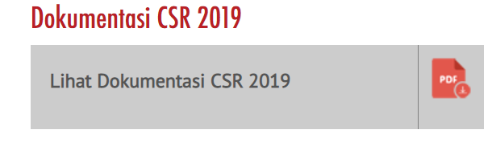

CSR
Kiprah PT. Gudang Garam Tbk. senantiasa ditandai dengan kerja keras
komitmen, inovasi, serta pencapaian yang membanggakan.
CSR
Gudang Garam tumbuh berdasarkan falsafah pendiri perusahaan yang kemudian dikembangkan
menjadi dasar tata kelola perusahaan yang baik. Nilai-nilai tersebut seterusnya dijadikan
panduan untuk senantiasa memenuhi tanggung jawab kepada karyawan dan masyarakat sekitar.
Kami memiliki komitmen untuk menunaikan tanggung jawab sosial serta terus berkontribusi
pada pembangunan masyarakat. Bagi kami, perwujudan tanggung jawab sosial pada masyarakat
merupakan sebuah investasi bagi masa depan sekaligus kesempatan untuk memastikan agar
perusahaan dan masyarakat dapat tumbuh bersama dan saling mendukung.
